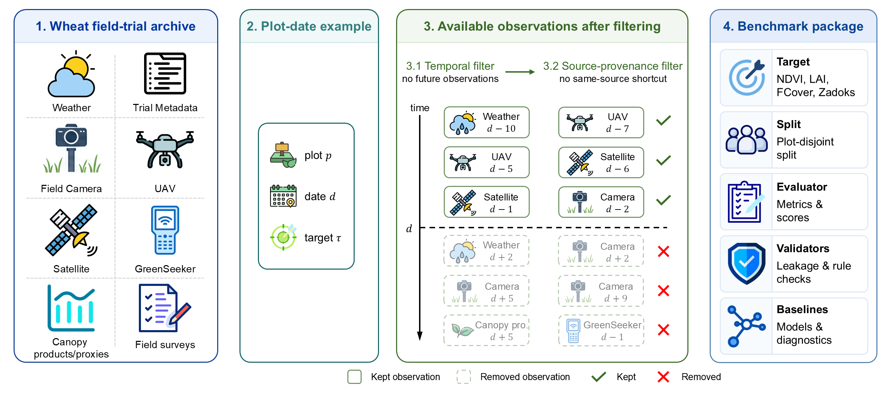
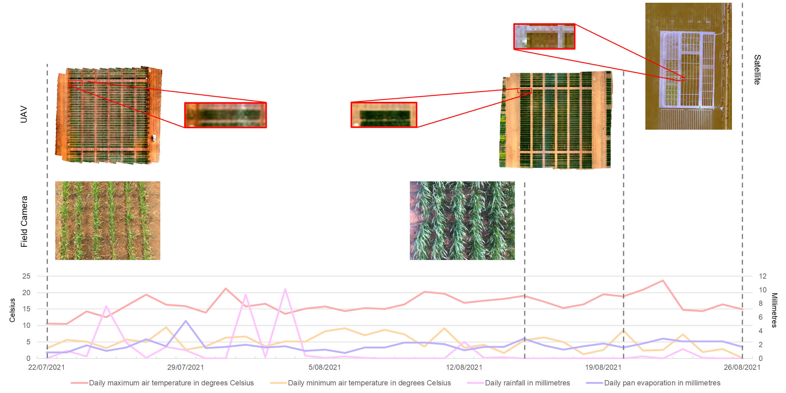

Wheat Field-Trial Benchmark
INVITA-WheatFieldState
A Real-World Benchmark for Crop-State Estimation in Wheat Field Trials.
INVITA-WheatFieldState converts a governed wheat field-trial archive into plot-date crop-state estimation tasks for canopy greenness, canopy amount, canopy closure, and phenological stage. Each target links a wheat plot on a target date to provenance-tracked trial assets under temporal and source-provenance policies that preserve real missing-modality structure.
Field Assets
Evidence collected around wheat field-trial plots
The benchmark preserves the mixed field-trial evidence that agronomists encounter in practice: weather context, trial metadata, aerial and ground imagery, sensor readings, canopy products/proxies, and field surveys with naturally irregular timing and modality coverage.
Weather history
Daily weather context used as asynchronous pre-target evidence.
UAV observations
Overhead field observations aligned to plot and date under the temporal policy.
Field-camera imagery
Ground-level canopy evidence with irregular timing and incomplete coverage.
Satellite observations
Remote-sensing evidence linked to plot-date examples without future observations.
GreenSeeker readings
Proximal canopy sensing that complements image and weather evidence.
Canopy products/proxies
Derived canopy signals retained with provenance labels for interpretation.
Trial metadata
Structured field-trial context for plots, dates, and crop-state targets.
Field surveys
Human-recorded trial observations represented as part of the archive.
Benchmark Construction
From wheat field-trial archive to crop-state benchmark

Crop-State Targets
Canopy and phenology targets
Targets are framed as crop-state signals observed in wheat field trials, covering canopy greenness, canopy amount, ground cover, and phenological development.
-
NDVI
Canopy greenness and vegetation vigor. -
LAI
Canopy amount and light-interception capacity. -
FCover
Fractional canopy cover and ground closure. -
Growth stage
Phenological development on the Zadoks scale.
Evidence Policy
Asynchronous wheat-trial evidence with missing modalities
Field observations arrive at different dates and from different acquisition systems. The benchmark admits only evidence available before each target date, excludes same-source shortcuts, and keeps incomplete UAV, satellite, field-camera, sensor, weather, and tabular coverage as part of the real trial setting.
Evaluation includes all-example evaluation, required-modality subset diagnostics, same-row fusion, and VLM diagnostics.

Paper And Release
Benchmark code here, governed field-trial archive separate
INVITA-WheatFieldState: A Real-World Benchmark for Crop-State Estimation in Wheat Field Trials. Author and citation metadata are withheld during anonymous review. Raw wheat field-trial records, private source ledgers, and governed derived release materials are managed outside Git and accessed through the release instructions.